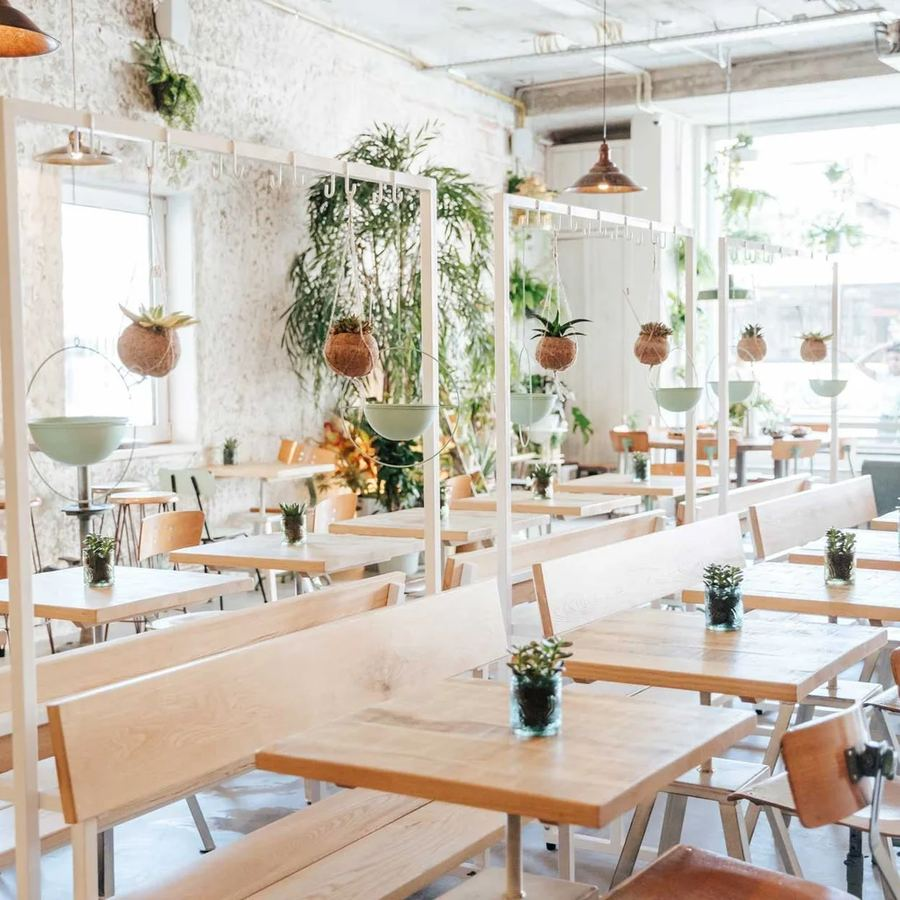
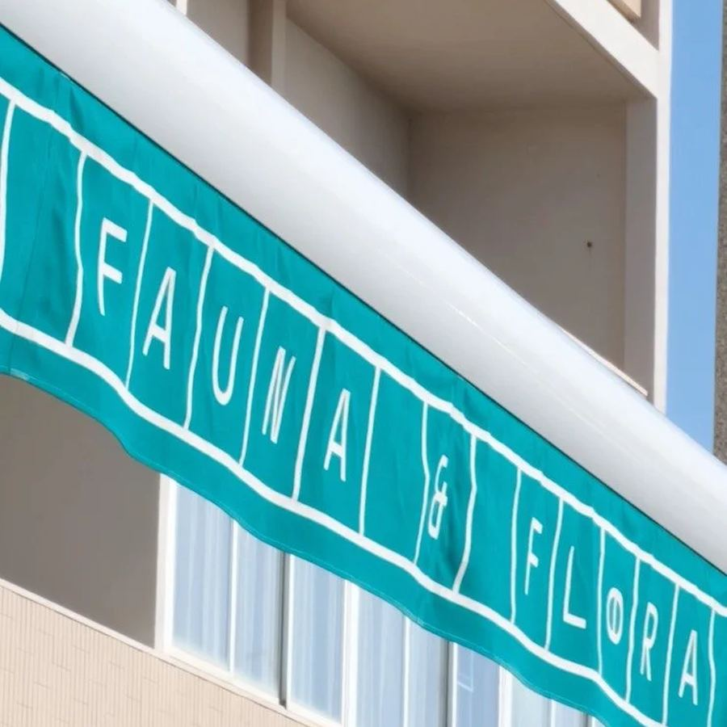
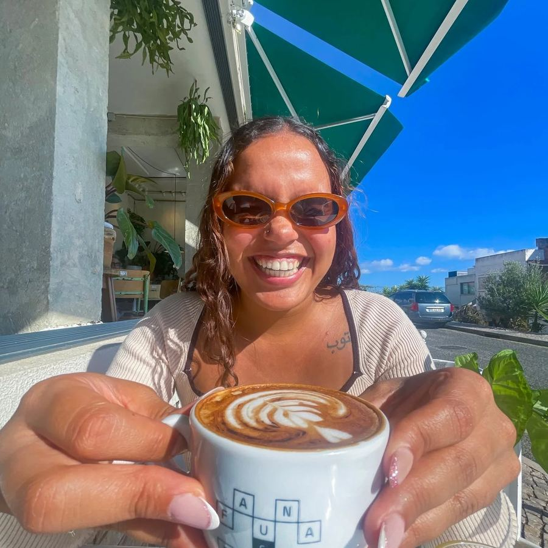

Santos
Where Fauna & Flora began.
Lunch menu Monday to Friday, 12:30 to 14:30.
Call 961 645 040.
Four houses in Santos, Anjos, Chiado and Estoril, open for brunch, lunch and coffee.



Where Fauna & Flora began.
Lunch menu Monday to Friday, 12:30 to 14:30.
Call 961 645 040.
Rua Febo Moniz, 27 A, 1150-201 Lisboa.
Open every day, 9:00 to 18:00. Call 926 684 312.
Lunch menu Monday to Friday, 12:30 to 14:30.
A terrace for sunny days in Chiado.
Lunch menu Monday to Friday, 12:30 to 14:30.
Rua Sacadura Cabral, 24 A, 2765-001 Estoril.
Open every day, 9:00 to 20:00. Call 969 925 478.
Its own Instagram: @faunafloraestoril.
Your dogs are not just welcome, they are VIP clients.
Vegetarian, vegan, gluten-free and lactose-free dishes are marked on the menu. Tell our staff about any allergy.
Filter the menu